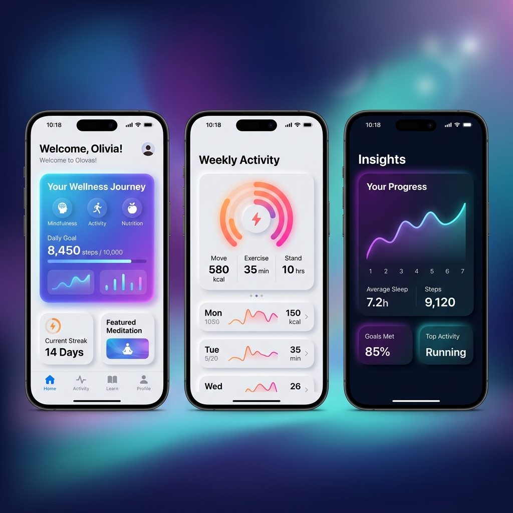

網頁開發
專案標題
專案概述 Overview
這是一段專案的詳細文字概述。
客戶 Client
客戶公司名稱
完成日期 Date
2026 年 2 月
專案連結 Link
我是陳志勝。畢業於逢甲大學資訊工程碩士，專注於利用尖端 AI 技術協作研發高價值系統，並將資工演算法思維融會於博弈決策（麻將）中，在不確定性的複雜局勢下尋求全局最優決策路徑。
「重複累人的寫程式交給人工智慧，人類的大腦應用於更完美的和牌美學與策略決策。」
我是陳志勝，求學於逢甲大學資訊工程學系，並取得了資工學士與碩士雙學位。在奠定了堅實的數據結構與網絡協議理論基礎後，我投身於最前沿的「AI 協同開發」與「博弈決策科學」研究。 我深信軟體工程的未來在於精確的人機對話，因此擅長叫 AI 寫出穩定、高品質的代碼；同時，我將博弈論、決策矩陣與動態規劃運用於中華傳統的麻將局中，在看似隨機的牌流中尋求概率的最優解與完美的和牌防守線。
打破傳統逐行編碼的手法，善用前沿 LLM 與多代理人系統，以 10 倍速率迅速建構並部署高質量的全棧式應用與雲端架構。
結合資工系的演算法思維與博弈理論（Game Theory），對複雜的多變局勢（如麻將牌局或商業談判）提供精準的量化模型諮詢。
為個人或企業量身定制高效、高精準度的提示詞架構，解決大語言模型幻覺問題，打造能獨立完成任務的 AI 代理人工作流。

人機協作實驗室 (Human-AI Collaborative Lab)
運用 Claude、GPT 系列模型及自主研發的 Prompt 推理管線，為多家新創客戶提供超高速全端網頁原型設計與自動化代碼管線建構，並開發麻將博弈概率預測模型。
逢甲大學研究所 (Feng Chia University - CS Master)
主修決策演算法、強化學習與大數據分析。於碩士期間發表了基於不確定局勢下演算法決策理論的相關研究，成功將嚴謹的資工思維引入多人博弈環境。
逢甲大學資訊電機學院 (Feng Chia University - CS Bachelor)
修習基礎數據結構、演算法分析、操作系統與網絡協議。在學期間完成了多個自動化編譯與高併發運算專案，奠定紮實的計算機工程實踐基礎。
逢甲大學週邊 / 台灣台中 / 支援全球雲端協作
Remote / Taichung, Taiwan